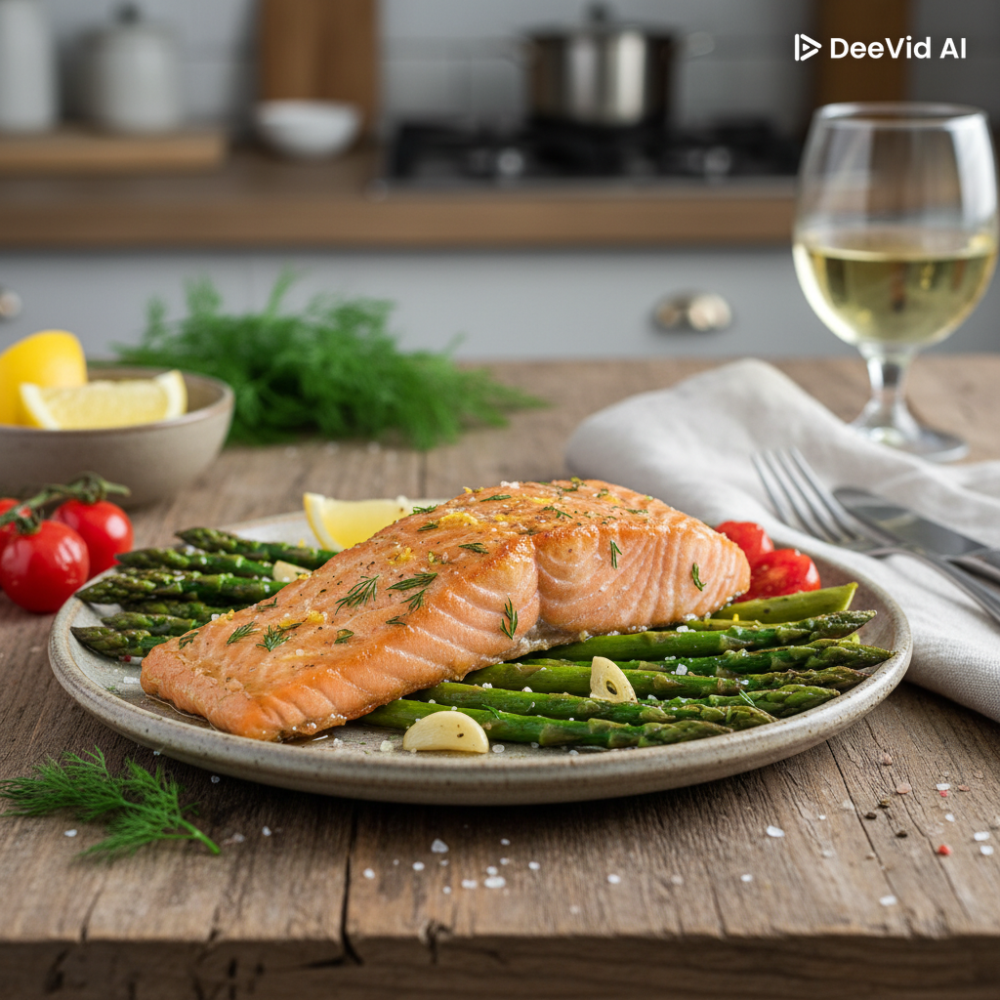
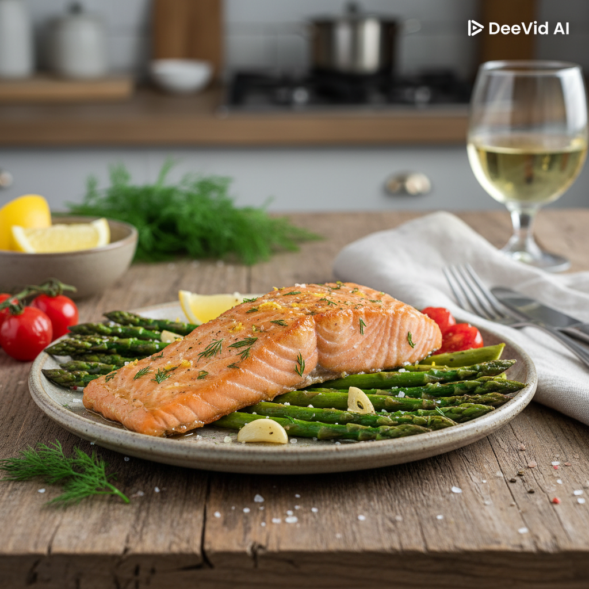

lava y corta la parte dura del tallo. Colócalos en una bandeja para hornear y rocíalos con 1 cucharada de aceite de oliva, sal y pimienta.
Coloca los filetes de salmón sobre la bandeja junto a los espárragos. Unta el salmón con el resto del aceite de oliva, el ajo picado, sal, pimienta, ralladura de limón y un poco de jugo de limón.
Hhornea durante 12-15 minutos (dependiendo del grosor del salmón) hasta que esté cocido pero jugoso.
Exprime un poco de jugo de limón sobre el salmón y espárragos antes de servir. Puedes decorar con eneldo
consejos
No sobrecocines el salmón; debe estar ligeramente rosado en el centro para que quede jugoso.
Para un toque extra de sabor, añade un poco de mantequilla encima del salmón antes de hornear.
Si los espárragos son muy finos, colócalos unos minutos después que el salmón para que no se quemen.
Puedes acompañar con arroz integral, quinoa o puré de patatas.
 
